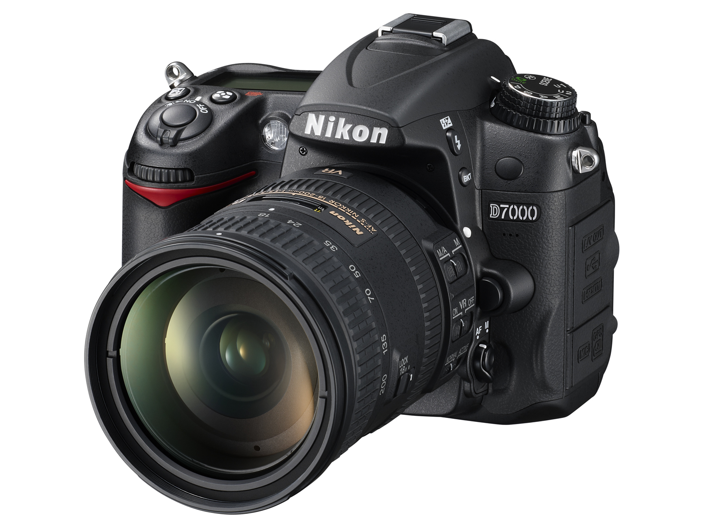
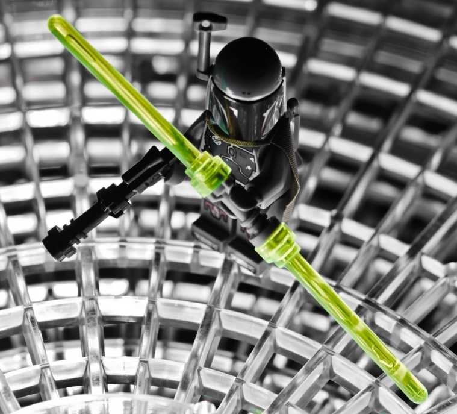

My Superpowered Webpage

Miguel Salgado
From Bayamon, Puerto Rico
¡Hola!
My name is Miguel Salgado and I'm originally from Puerto Rico. I moved to Chicago in 2006 after graduating from college as both a Biologist and Mechanical Engineer. I currently work as rotating equipment maintenance and realibility engineer for a major oil company in Northwest Indiana. I have founded and led various diversity and inclusion initiatives within my business as I have a deep affinity for fairness and equality among all. I also currently attend the Kellogg School of Business part time program where I am majoring in Business Strategy, International Busines Strategy, and Entrepeneurship and Innovation. I am an active member of the Kellogg Part Time MBA program and am currently working to bring MOSAIC week to the Part-time MBA program for the first time ever.
"All we have to decide is what to do with the time that is given us.”
Skills
- Engineering
- Leadership
- Diversity and Inclusion Initiatives/Event Development
Top 10 Interests:
- Innovation
- World Travel
- Ethnic Cuisines
- Photography
- Acting
- Strategy Development
- Languages and Cultures
- Art
- Dancing
- Music
Hobbies
-
 Cooking Desserts
Cooking Desserts -  Photography
-  Legos
-
 Video Games
Video Games